Inbox → Today flow
Von Inbox zu Heute
Inbox, Today, Tomorrow, Scheduled, Anytime, Recurring, Unlabeled, and Completed views — all from Akonadi.
Inbox, Heute, Morgen, Geplant, Jederzeit, Wiederkehrend, Ohne Label und Erledigt – alles aus Akonadi.
Quick Add
Quick Add
tomorrow 18:00 !high #tag @project — natural-language task entry with fuzzy matching.
tomorrow 18:00 !high #tag @project – Aufgaben in natürlicher Sprache eingeben, mit unscharfer Zuordnung.
Projects & Labels
Projekte & Labels
Akonadi calendars as projects, task categories as labels. Color-coded, filterable, drag-and-drop subtasks.
Akonadi-Kalender als Projekte, Aufgabenkategorien als Labels. Farbcodiert, filterbar, Unteraufgaben per Drag-and-drop.
Any Akonadi resource
Jede Akonadi-Ressource
Uses the accounts you already set up in KOrganizer or Merkuro, whatever resource type they use. No separate login.
Nutzt die Konten, die du in KOrganizer oder Merkuro schon eingerichtet hast, egal welchen Ressourcentyp sie nutzen. Kein separater Login.
Panel & Desktop
Panel & Desktop
Works as a panel flyout and a desktop widget. Shared settings, shared config, same full editor.
Funktioniert als Panel-Popup und als Desktop-Widget. Gemeinsame Einstellungen, gleicher vollständiger Editor.
Translations
Übersetzungen
German, Spanish, French, Japanese, Simplified Chinese — with Quick Add understanding your language too.
Deutsch, Spanisch, Französisch, Japanisch und vereinfachtes Chinesisch – Quick Add versteht auch deine Sprache.
Your own views
Eigene Ansichten
Save filters by project, label, status, due date and priority as views of their own, with badges in the sidebar.
Speichere Filter nach Projekt, Label, Status, Fälligkeit und Priorität als eigene Ansichten, mit Zähler in der Seitenleiste.
Sort your way
Sortieren, wie du willst
Multi-level sorting, by default Priority › Due › A–Z. Global or per view, with many sort keys.
Mehrstufige Sortierung, standardmäßig Priorität › Fällig › A–Z. Global oder pro Ansicht, mit vielen Sortierschlüsseln.
Calendar-aware
Kalenderbewusst
Optionally silence reminders during ongoing calendar events. You pick which event calendars count.
Erinnerungen lassen sich während laufender Kalendertermine stummschalten. Du wählst, welche Terminkalender zählen.
Everything in its place
Alles an seinem Platz
The sidebar keeps your tasks sorted the way you think: built-in views with live counts, your projects and your labels.
Die Seitenleiste ordnet deine Aufgaben so, wie du denkst: eingebaute Ansichten mit Live-Zählern, deine Projekte und deine Labels.
- Views such as Inbox, Today, Overdue, Tomorrow, Scheduled, Anytime and Completed
- Projects are your Akonadi calendars
- Labels are task categories, color-coded and filterable
- Order and visibility can be changed in the Sidebar settings
- Ansichten wie Inbox, Heute, Überfällig, Morgen, Geplant, Jederzeit und Erledigt
- Projekte sind deine Akonadi-Kalender
- Labels sind Aufgabenkategorien, farbcodiert und filterbar
- Reihenfolge und Sichtbarkeit lassen sich in den Seitenleisten-Einstellungen ändern
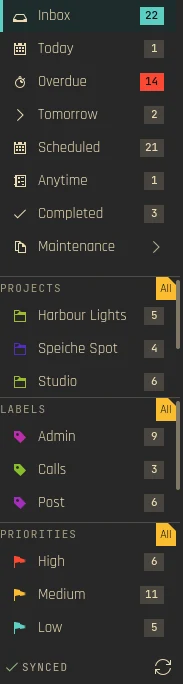
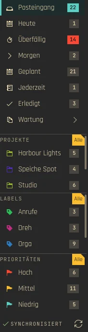
One task set, six views
Ein Aufgabenbestand, sechs Ansichten
A switcher in the header changes how the same filtered tasks are shown. The sidebar selection or Smart View decides what you see, the view mode decides how.
Ein Umschalter im Kopf ändert, wie dieselben gefilterten Aufgaben dargestellt werden. Die Auswahl in der Seitenleiste oder eine Smart View bestimmt, was du siehst, der Ansichtsmodus, wie.
- List: the classic task list with inline editor
- Kanban: columns and cards
- Swimlanes: lanes by project, label, priority or parent task × day, week or month
- Project plan: projects × time with a planning horizon
- Heatmap: day cells by due date or completions
- Agenda: your days, weeks and months with appointments, and tasks planned into free time
- Liste: die klassische Aufgabenliste mit Inline-Editor
- Kanban: Spalten und Karten
- Swimlanes: Bahnen nach Projekt, Label, Priorität oder Elternaufgabe × Tag, Woche oder Monat
- Projektplan: Projekte × Zeit mit Planungshorizont
- Heatmap: Tageszellen nach Fälligkeit oder Erledigungen
- Agenda: deine Tage, Wochen und Monate mit Terminen, Aufgaben in freie Zeit geplant
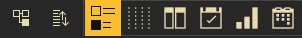

Move work along
Arbeit weiterschieben
Cards sit in columns such as Needs action, In process and Completed. Drag a card to another column and Kurrent writes the matching field back through Akonadi. The column source is configurable in the settings.
Karten liegen in Spalten wie Needs action, In process und Completed. Ziehst du eine Karte in eine andere Spalte, schreibt Kurrent das passende Feld über Akonadi zurück. Die Spaltenquelle ist in den Einstellungen wählbar.
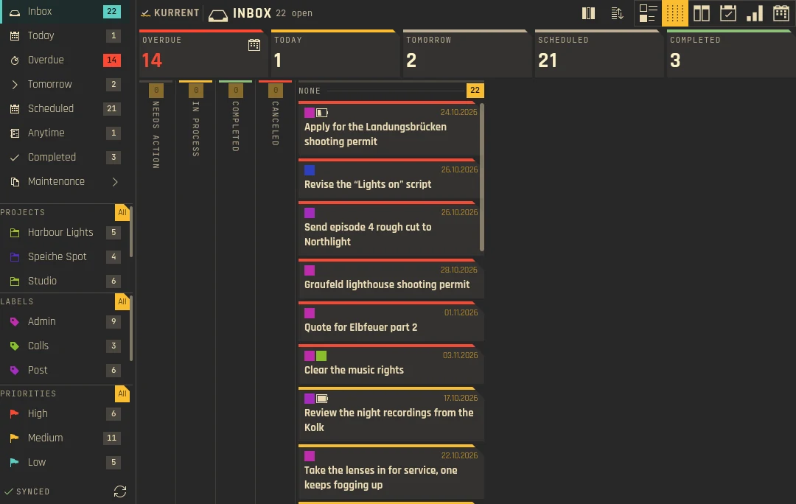
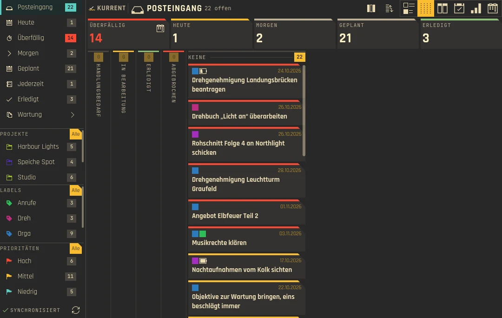
Plan tasks into your day
Aufgaben in deinen Tag planen
The Agenda shows a day as an hour grid beside your appointments, with free time in green. Drop a task on a day and it lands in the next gap long enough for it; drag a block's edges to change its time. The week is a board with a load bar per day, the month tints each day by how full it is. Appointments come from your Akonadi calendars, so what you see matches KOrganizer and Merkuro.
Die Agenda zeigt einen Tag als Stundenraster neben deinen Terminen, freie Zeit in Grün. Eine abgelegte Aufgabe landet in der nächsten Lücke, die lang genug ist; an den Kanten eines Blocks ziehst du seine Zeit. Die Woche ist ein Brett mit einem Auslastungsbalken je Tag, der Monat tönt jeden Tag nach Auslastung. Die Termine stammen aus deinen Akonadi-Kalendern und entsprechen deshalb KOrganizer und Merkuro.


See the load at a glance
Die Last auf einen Blick
The heatmap colors each day of the month by how many tasks are due or were completed. Switch the mode, or jump to the year view to spot busy weeks early.
Die Heatmap färbt jeden Tag des Monats danach, wie viele Aufgaben fällig sind oder erledigt wurden. Wechsle den Modus oder springe in die Jahresansicht, um volle Wochen früh zu erkennen.
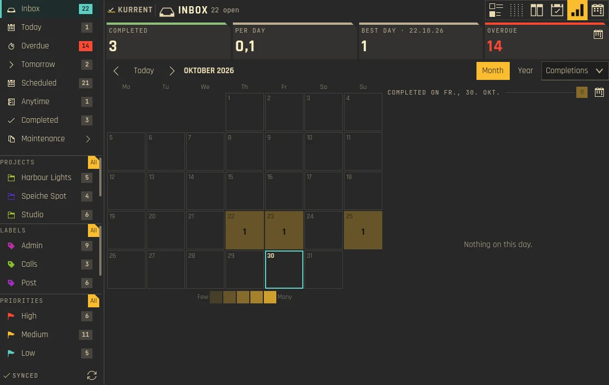
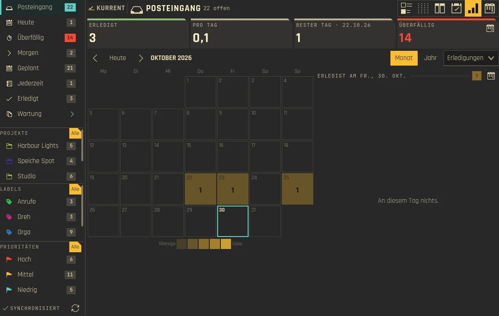
Quick Add
Quick Add
Type a task in plain language and Kurrent fills in the fields. Parts you leave out stay empty, names are matched fuzzily against your projects and labels.
Tippe eine Aufgabe in normaler Sprache, und Kurrent füllt die Felder aus. Was du weglässt, bleibt leer, Namen werden unscharf mit deinen Projekten und Labels abgeglichen.
Send invoiceRechnung sendenTitleTiteltomorrow 18:00morgen 18:00Date and timeDatum und Uhrzeit!high!hochPriorityPriorität#tagLabelLabel@project@projektProjectProjekt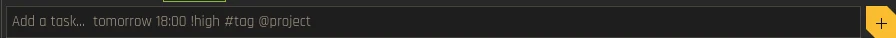
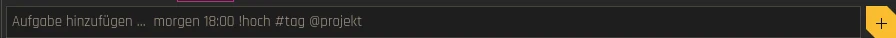
- Long text wraps and the field grows; Enter adds the task, Shift+Enter inserts a line break
- Clicking the plus button with an empty field opens the full editor
- Quick Add understands your interface language too
- Langer Text bricht um und das Feld wächst; Enter legt die Aufgabe an, Shift+Enter fügt einen Zeilenumbruch ein
- Ein Klick auf das Plus bei leerem Feld öffnet den vollen Editor
- Quick Add versteht auch deine Oberflächensprache
Panel and notifications
Panel und Benachrichtigungen
- Panel badge: open tasks, tasks for tomorrow or high priority, as a number or a dot; the overdue color is configurable
- Panel tooltip: choose what it summarizes, from open tasks to all views
- Join button for
http(s)meeting links, in the row and in the editor - Reminders can stay quiet while a calendar event is running
- Panel-Badge: offene Aufgaben, Aufgaben für morgen oder mit hoher Priorität, als Zahl oder Punkt; die Farbe für Überfälliges ist einstellbar
- Panel-Tooltip: wähle, was er zusammenfasst, von offenen Aufgaben bis zu allen Ansichten
- Beitreten-Knopf für
http(s)-Meeting-Links, in der Zeile und im Editor - Erinnerungen können still bleiben, solange ein Kalendertermin läuft
How it works
So funktioniert es
Akonadi stays the source of truth. Every change goes through Akonadi jobs, and the widget only keeps an optimistic cache in front of it. There is no second task database.
Akonadi bleibt die Quelle der Wahrheit. Jede Änderung läuft über Akonadi-Jobs, und das Widget hält nur einen optimistischen Cache davor. Es gibt keine zweite Aufgabendatenbank.
- Changes show up at once and are rolled back if Akonadi refuses them
- A banner shows when Akonadi is offline (red) or syncing (yellow)
- Merge conflicts open a wizard that walks through one field at a time
- If widget and plugin versions differ, a warning explains how to reinstall
- Änderungen erscheinen sofort und werden zurückgenommen, wenn Akonadi sie ablehnt
- Ein Banner zeigt, wenn Akonadi offline (rot) oder am Synchronisieren (gelb) ist
- Bei Merge-Konflikten führt ein Assistent Feld für Feld durch die Auflösung
- Weichen Widget- und Plugin-Version voneinander ab, erklärt eine Warnung die Neuinstallation
Install
Installation
- Set up your calendar in KOrganizer or Merkuro: add a resource for your account, such as a DAV groupware resource or any other type Akonadi supports, enter its connection details, and enable the task (VTODO) collections. Check with
akonadictl status. - Run the one-liner from the box above. It downloads the prebuilt plugin and the widget from the latest release into
~/.local. - Add the Kurrent widget to your panel or desktop.
- Richte deinen Kalender in KOrganizer oder Merkuro ein: eine Ressource für dein Konto hinzufügen, etwa eine DAV-Groupware-Ressource oder einen anderen von Akonadi unterstützten Typ, die Verbindungsdaten eintragen und die Aufgabensammlungen (VTODO) aktivieren. Prüfen mit
akonadictl status. - Führe den Einzeiler aus der Box oben aus. Er lädt das fertige Plugin und das Widget aus dem neuesten Release nach
~/.local. - Füge das Widget Kurrent zu deinem Panel oder Desktop hinzu.
Options for the installer: --tag v0.4 pins a release, --from-source compiles instead of using the Arch-built plugin, --no-deps skips distro packages. It checks for Plasma 6, Qt 6 and KF6 first and knows package lists for Arch, Fedora/RHEL, Debian/Ubuntu and openSUSE.
Optionen des Installers: --tag v0.4 pinnt ein Release, --from-source kompiliert statt des auf Arch gebauten Plugins, --no-deps überspringt Distributionspakete. Er prüft zuerst Plasma 6, Qt 6 und KF6 und kennt Paketlisten für Arch, Fedora/RHEL, Debian/Ubuntu und openSUSE.
Configuration
Konfiguration
Right-click the widget and choose Configure Kurrent. Settings apply to every Kurrent instance and live in ~/.config/com.github.shrippen.kurrent/kurrentrc.
Rechtsklick auf das Widget und Kurrent einrichten. Die Einstellungen gelten für jede Kurrent-Instanz und liegen in ~/.config/com.github.shrippen.kurrent/kurrentrc.
| PageSeite | What you setWas du einstellst |
|---|---|
| GeneralAllgemein | Default view and completed tasksStandardansicht und erledigte Aufgaben |
| AppearanceDarstellung | Blurred wallpaper background via PlasmaVerschwommener Hintergrund über Plasma |
| SidebarSeitenleiste | Row size, order and visibilityZeilengröße, Reihenfolge und Sichtbarkeit |
| TasksAufgaben | Sorting (global or per view) and the default project for new tasksSortierung (global oder pro Ansicht) und Standardprojekt für neue Aufgaben |
| ViewsAnsichten | Smart Views, Kanban, Swimlanes and Project planSmart Views, Kanban, Swimlanes und Projektplan |
| PanelPanel | Badge mode, dot or number, tooltipBadge-Modus, Punkt oder Zahl, Tooltip |
| NotificationsBenachrichtigungen | Reminders, quiet during calendar eventsErinnerungen, still bei Kalenderterminen |
| Projects and LabelsProjekte und Labels | Which calendars and labels are enabled or hiddenWelche Kalender und Labels aktiv oder verborgen sind |
Questions
Fragen
Why is the KDE Store package not enough?Warum reicht das Paket aus dem KDE Store nicht?
The .plasmoid from the Store is only the widget UI. The Akonadi backend is a compiled plugin, libkurrentplugin.so, which the Store cannot ship. Without it Kurrent shows how to get the plugin instead of a QML error.
Das .plasmoid aus dem Store enthält nur die Widget-Oberfläche. Das Akonadi-Backend ist ein kompiliertes Plugin, libkurrentplugin.so, das der Store nicht ausliefern kann. Ohne es zeigt Kurrent, wie du das Plugin bekommst, statt eines QML-Fehlers.
“Get New Widgets” updates only the UI. After a Store update, run the one-liner again; until then a version mismatch warning appears.
„Neue Widgets holen“ aktualisiert nur die Oberfläche. Führe nach einem Store-Update den Einzeiler erneut aus; bis dahin erscheint eine Warnung zur Versionsabweichung.
Does Kurrent have its own login or database?Hat Kurrent ein eigenes Login oder eine eigene Datenbank?
No. Kurrent reads and writes the calendars you already set up in KDE PIM. There is no separate login and no parallel task database.
Nein. Kurrent liest und schreibt die Kalender, die du in KDE PIM schon eingerichtet hast. Es gibt kein separates Login und keine parallele Aufgabendatenbank.
Does it work on immutable distros?Funktioniert es auf unveränderlichen Distributionen?
Yes, with an extra step. On Fedora Atomic layer the dependencies with rpm-ostree install, reboot and run the installer with --no-deps; on openSUSE MicroOS use transactional-update pkg install first. Or run the installer inside Toolbx or Distrobox. Kurrent itself installs under ~/.local, which survives reboots.
Ja, mit einem Zusatzschritt. Unter Fedora Atomic installierst du die Abhängigkeiten mit rpm-ostree install, startest neu und führst den Installer mit --no-deps aus; unter openSUSE MicroOS zuerst transactional-update pkg install. Oder starte den Installer in Toolbx oder Distrobox. Kurrent selbst landet in ~/.local, das Neustarts übersteht.
Which distributions are supported?Welche Distributionen werden unterstützt?
The prebuilt plugin is built on Arch Linux and linked against its Plasma 6 and KDE PIM. On other distributions the installer compiles from source. AUR and COPR packages are planned.
Das fertige Plugin ist auf Arch Linux gebaut und gegen dessen Plasma 6 und KDE PIM gelinkt. Auf anderen Distributionen kompiliert der Installer aus dem Quellcode. Pakete für AUR und COPR sind geplant.
Roadmap
Roadmap
Toward 1.0: distribution packages (AUR and COPR, then OBS and Debian if cheap), keyboard-first use, an undo control in the header and more polish. Out of scope for 1.0: Markdown notes, attachments, a login of its own and accounts without Akonadi.
Auf dem Weg zu 1.0: Distributionspakete (AUR und COPR, danach OBS und Debian, wenn es wenig kostet), Bedienung per Tastatur, ein Rückgängig-Knopf im Kopf und mehr Feinschliff. Nicht Teil von 1.0: Markdown-Notizen, Anhänge, ein eigenes Login und Konten ohne Akonadi.
Details in ROADMAP.md and the changelog.
Details in der ROADMAP.md und im Changelog.
Changes
Änderungen
What each release brought, newest first. Every release adds an entry here and the same notes on the release page.
Was jede Version gebracht hat, die neueste zuerst. Jede Version bekommt hier einen Eintrag und dieselben Notizen auf der Release-Seite.
-
0.5.0
Kurrent learns to plan your days: the Agenda shows a day as an hour grid next to your appointments, a week as a board and a month at a glance, and you drag tasks into free time. The widget gets a new look with tiles, an inspector, a narrow layout and the optional Kante style, Swimlanes and the Project plan are reworked, the settings are regrouped, and there is now a terminal client.Kurrent plant jetzt deine Tage mit: Die Agenda zeigt einen Tag als Stundenraster neben deinen Terminen, eine Woche als Brett und einen Monat im Überblick, und Aufgaben ziehst du in freie Zeit. Das Widget bekommt ein neues Aussehen mit Kacheln, einem Inspektor, einem schmalen Layout und dem wählbaren Kante-Stil, Swimlanes und Projektplan sind überarbeitet, die Einstellungen neu geordnet, und es gibt einen Terminal-Client.
NewNeu
- Agenda, Day: 14 days from the picked date, each as an hour grid (07–22, longer on a day with something earlier or later) with your appointments, tasks with a time as blocks and free gaps of 30 minutes and more in green; today starts at the now line, which moves with the clock. Days with nothing on them fold into one line. A month calendar with dots for appointments, tasks and overdue tasks picks the first day.Agenda, Tag: 14 Tage ab dem gewählten Datum, jeder als Stundenraster (07–22 Uhr, länger, wenn etwas früher oder später liegt) mit deinen Terminen, Aufgaben mit Uhrzeit als Blöcke und freien Lücken ab 30 Minuten in Grün; heute beginnt an der Jetzt-Linie, die mit der Uhr wandert. Tage ohne Einträge klappen zu einer Zeile zusammen. Ein Monatskalender mit Punkten für Termine, Aufgaben und Überfälliges wählt den ersten Tag.
- Plan by dragging: drop a task on a day and it lands in the next free time long enough for it (a block keeps its length, otherwise 60, 45 or 30 minutes by priority). Drop it under "No time", or use a suggestion's arrow button, to keep it on the day without a time. Click a block to get grips at its edges; they move its time in 15-minute steps and stop at the next appointment or task. Everything can be undone.Planen per Ziehen: Eine abgelegte Aufgabe landet in der nächsten freien Zeit, die lang genug ist (ein Block behält seine Länge, sonst 60, 45 oder 30 Minuten nach Priorität). Unter „Ohne Uhrzeit“ abgelegt oder mit dem Pfeilknopf eines Vorschlags bleibt sie ohne Uhrzeit auf dem Tag. Ein Klick auf einen Block zeigt Griffe an seinen Kanten; sie verschieben seine Zeit in 15-Minuten-Schritten und halten am nächsten Termin oder an der nächsten Aufgabe. Alles lässt sich rückgängig machen.
- Suggestions for the picked day (click a day's header to pick it) in three tiers, First, Then and If time allows: overdue tasks and tasks due within a week rank highest, undated tasks come later, and high priority and fitting the largest free gap count too. Each suggestion says why it is there.Vorschläge für den gewählten Tag (ein Klick auf den Tageskopf wählt ihn) in drei Stufen, Zuerst, Danach und Wenn Zeit bleibt: Überfällige und innerhalb einer Woche fällige Aufgaben stehen am höchsten, Aufgaben ohne Datum später, und hohe Priorität und das Passen in die größte freie Lücke zählen mit. Jeder Vorschlag sagt, warum er dasteht.
- Agenda, Week: one column per day with appointments, open tasks as cards and a load bar against your workday (8 hours by default, Settings › Views › Agenda), orange when the day is full. Done tasks fold into "✓ N done", empty days say "free", and + adds a task for the day. Overdue tasks wait in a tray above the week, and "All to today" moves them to today with their times. Drop a card on another day to move it; its time stays. Recurring tasks are not moved here yet, neither by dragging nor by "All to today"; move them in the editor.Agenda, Woche: eine Spalte je Tag mit Terminen, offenen Aufgaben als Karten und einem Auslastungsbalken gegen deinen Arbeitstag (Standard 8 Stunden, Einstellungen › Ansichten › Agenda), orange, wenn der Tag voll ist. Erledigte Aufgaben klappen zu „✓ N erledigt“ ein, leere Tage zeigen „frei“, und + legt eine Aufgabe für den Tag an. Überfällige Aufgaben warten in einem Fach über der Woche, und „Alle auf heute“ legt sie mit ihren Uhrzeiten auf heute. Eine Karte auf einem anderen Tag ablegen verschiebt sie; die Uhrzeit bleibt. Wiederkehrende Aufgaben werden hier noch nicht verschoben, weder per Ziehen noch mit „Alle auf heute“; verschiebe sie im Editor.
- Agenda, Month: six weeks tinted by how full each day is, up to three entries per day and "+n more", overdue in red. Click a day for a panel with its appointments, tasks and a field to add one; drop a task on a day to move it.Agenda, Monat: sechs Wochen, je Tag nach Auslastung getönt, bis zu drei Einträge je Tag und „+n weitere“, Überfälliges in Rot. Ein Klick auf einen Tag öffnet eine Leiste mit seinen Terminen, Aufgaben und einem Feld zum Anlegen; eine Aufgabe auf einem Tag ablegen verschiebt sie.
- Day | Week | Month share one date and remember the last view; "Open day →", a weekday in the week or a day number in the month opens that day. Keys T, W and M switch the view, ← → step, H jumps to today.Tag | Woche | Monat teilen sich ein Datum und merken sich die letzte Ansicht; „Tag öffnen →“, ein Wochentag in der Woche oder eine Tageszahl im Monat öffnet diesen Tag. Die Tasten T, W und M wechseln die Ansicht, ← → blättern, H springt auf heute.
- Add tasks in the Agenda with the same Quick Add as the list. In the day view, click free time and type: the task is planned in that hour. In the week and the month the task lands on the day unless the text names a date.Aufgaben in der Agenda mit derselben Schnelleingabe wie in der Liste anlegen. In der Tagesansicht auf freie Zeit klicken und tippen: Die Aufgabe wird in dieser Stunde geplant. In Woche und Monat landet sie auf dem Tag, außer der Text nennt ein Datum.
- Appointments in week and month show a stripe in their calendar's colour and a time column, so they read differently from tasks.Termine in Woche und Monat zeigen einen Streifen in der Farbe ihres Kalenders und eine Zeitspalte, so unterscheiden sie sich von Aufgaben.
- Tiles above the task pane: Overdue, Today, Tomorrow, Scheduled and Completed with their counts; a click opens the view. The overdue tile offers "Move all to today", and the heatmap shows its figures (total, per day, best day) in the tiles.Kacheln über der Aufgabenliste: Überfällig, Heute, Morgen, Geplant und Erledigt mit ihren Zahlen; ein Klick öffnet die Ansicht. Die Kachel Überfällig bietet „Alle auf heute“, und die Heatmap zeigt ihre Kennzahlen (gesamt, je Tag, bester Tag) in den Kacheln.
- Inspector beside the task pane: a click on a task in the list, Kanban, Swimlanes, the Agenda or the heatmap's day list shows its project, labels, status, dates, subtasks with progress and notes without opening the editor. Values with a picker (due date, priority, project, status, progress, secrecy) open a menu, "Edit here" edits title, description and location in place, and Done, Tomorrow, Next week and Editor are one click away. Double click still opens the full editor. Tiles and inspector can be turned off in Settings › Appearance › Wide layout.Inspektor neben der Aufgabenliste: Ein Klick auf eine Aufgabe in Liste, Kanban, Swimlanes, der Agenda oder der Tagesliste der Heatmap zeigt Projekt, Labels, Status, Daten, Unteraufgaben mit Fortschritt und Notizen, ohne den Editor zu öffnen. Werte mit Auswahl (Fälligkeit, Priorität, Projekt, Status, Fortschritt, Vertraulichkeit) öffnen ein Menü, „Hier bearbeiten“ ändert Titel, Beschreibung und Ort direkt, und Erledigt, Morgen, Nächste Woche und Editor sind einen Klick entfernt. Ein Doppelklick öffnet weiter den vollen Editor. Kacheln und Inspektor lassen sich unter Einstellungen › Erscheinungsbild › Breites Layout abschalten.
- Narrow layout: when the widget is narrow, the views become tabs with counters above the tasks (arrows at the edges when more tabs exist), and the sidebar opens on demand. The panel popup opens narrow by default.Schmales Layout: Ist das Widget schmal, werden die Ansichten zu Tabs mit Zählern über den Aufgaben (mit Pfeilen an den Rändern, wenn mehr Tabs da sind), und die Seitenleiste öffnet sich bei Bedarf. Das Panel-Popup öffnet sich standardmäßig schmal.
- Styles: Plasma (default) follows your Plasma colour scheme like any KDE app; Kante brings its own palette (Gruvbox, or Leinen on a light colour scheme) with square controls, cut corners and condensed titles; Kante Light keeps Plasma's colours and adds only Kante's shapes and type. Pick one with preview cards in Settings › Appearance. In Kante, Return presses a focused button. A translucent or blurred Plasma background shows through in every style.Stile: Plasma (Standard) folgt deinem Plasma-Farbschema wie jede KDE-App; Kante bringt eine eigene Palette (Gruvbox, oder Leinen bei hellem Farbschema) mit eckigen Bedienelementen, abgeschnittenen Ecken und schmalen Titeln; Kante Light behält die Farben von Plasma und ergänzt nur Formen und Schrift von Kante. Gewählt mit Vorschaukarten unter Einstellungen › Erscheinungsbild. In Kante drückt Enter einen fokussierten Knopf. Ein durchscheinender oder unscharfer Plasma-Hintergrund bleibt in jedem Stil sichtbar.
- Accent switches: show project and label colours or priority colours as accents, or keep the widget calm.Akzent-Schalter: Projekt- und Labelfarben oder Prioritätsfarben als Akzente zeigen, oder das Widget ruhig lassen.
- Overdue tasks in other views: a notice with "Move all to today" and "Show overdue" (a compact chip in the narrow layout); it can be turned off.Überfällige Aufgaben in anderen Ansichten: ein Hinweis mit „Alle auf heute“ und „Überfällige zeigen“ (im schmalen Layout ein kompakter Chip); lässt sich abschalten.
- Header: "N open · M overdue" next to the view title, and active filters as chips whose × clears just that filter.Kopfzeile: „N offen · M überfällig“ neben dem Titel der Ansicht, und aktive Filter als Chips, deren × nur diesen Filter entfernt.
- Sidebar: the views (Inbox, Today, Overdue …) always get their full height, and projects, labels and the other sections share the rest. Optional dense rows (Settings › Sidebar › Row size), a sync line ("Synced", "Syncing…", "Akonadi offline") with "Sync now", and a note when a view hides a section.Seitenleiste: Die Ansichten (Posteingang, Heute, Überfällig …) bekommen immer ihre volle Höhe, Projekte, Labels und die übrigen Bereiche teilen sich den Rest. Wählbar dichte Zeilen (Einstellungen › Seitenleiste › Zeilenhöhe), eine Sync-Zeile („Synchronisiert“, „Synchronisiere …“, „Akonadi offline“) mit „Jetzt synchronisieren“ und ein Hinweis, wenn eine Ansicht einen Bereich ausblendet.
- Counters are badges (red for overdue), Kanban column headers count their cards, and the panel badge looks like Plasma's notification badge.Zähler sind Plaketten (rot für Überfälliges), Kanban-Spalten zählen ihre Karten, und die Plakette im Panel sieht aus wie die Benachrichtigungs-Plakette von Plasma.
kurrent-tui: Kurrent in a terminal, installed by source builds (install.sh, or the installer with--from-source). Now, Soon and Someday as one list;xdone,ttoday,mtomorrow,dsomeday,aadds with Quick Add,/searches, andggoes through overdue tasks one at a time. Its texts are English only for now.kurrent-tui: Kurrent im Terminal, wird bei Quellbuilds mitinstalliert (install.shoder der Installer mit--from-source). Now, Soon und Someday als eine Liste;xerledigt,theute,mmorgen,dirgendwann,alegt per Schnelleingabe an,/sucht, undggeht überfällige Aufgaben einzeln durch. Seine Texte sind vorerst nur Englisch.
ImprovedVerbessert
- Swimlanes hold task cards. Drag a card to another cell to change its project, label, priority or parent and move its due date into that period, as one undo step. Columns are weeks by default.Swimlanes enthalten Aufgabenkarten. Eine Karte in eine andere Zelle ziehen ändert Projekt, Label, Priorität oder Elternaufgabe und legt die Fälligkeit in diesen Zeitraum, als ein Rückgängig-Schritt. Spalten sind standardmäßig Wochen.
- Swimlanes have a horizon (Settings › Views › Look ahead, automatic by default) with Overdue, Later and No date columns; empty periods stay as drop targets. The Project plan gets the same Later column instead of leaving far-off tasks out.Swimlanes haben einen Horizont (Einstellungen › Ansichten › Vorausschau, standardmäßig automatisch) mit Spalten für Überfällig, Später und Kein Datum; leere Zeiträume bleiben als Ablageziel. Der Projektplan bekommt dieselbe Spalte Später, statt ferne Aufgaben wegzulassen.
- Swimlanes and the Project plan share one grid: row and column headers stay in place, scrolling works like in Kanban (wheel, thin bars, middle-click to pan), the current period is highlighted with a button to jump to it, and column headers name the period, such as the calendar week with its dates, or "Today". A button in the header sets rows, columns and look ahead without the settings dialog.Swimlanes und Projektplan teilen sich ein Raster: Zeilen- und Spaltenköpfe bleiben stehen, Scrollen geht wie im Kanban (Mausrad, schmale Leisten, Mittelklick zum Verschieben), der aktuelle Zeitraum ist hervorgehoben mit einem Knopf, der zu ihm springt, und Spaltenköpfe nennen den Zeitraum, etwa die Kalenderwoche mit ihren Daten, oder „Heute“. Ein Knopf in der Kopfzeile stellt Zeilen, Spalten und Vorausschau ein, ohne den Einstellungsdialog.
- A click on a Swimlanes or Project plan cell, row or column header opens the list filtered to it, with a chip in the header to go back.Ein Klick auf eine Zelle, einen Zeilen- oder Spaltenkopf in Swimlanes oder Projektplan öffnet die Liste, gefiltert darauf, mit einem Chip in der Kopfzeile für den Weg zurück.
- Swimlanes stay fast with many tasks: a cell shows up to eight cards and "+N more tasks", and switching rows or columns no longer stalls the widget.Swimlanes bleiben auch mit vielen Aufgaben schnell: Eine Zelle zeigt bis zu acht Karten und „+N weitere Aufgaben“, und das Umschalten von Zeilen oder Spalten bremst das Widget nicht mehr aus.
- Project plan cells show how busy they are compared with the busiest cell, a red dot for overdue tasks, a flag for high priority and a split bar by priority; tooltips work, a legend explains the colours, and projects are sorted by name.Zellen im Projektplan zeigen ihre Auslastung im Vergleich zur vollsten Zelle, einen roten Punkt für Überfälliges, eine Flagge für hohe Priorität und einen Balken nach Priorität; Tooltips funktionieren, eine Legende erklärt die Farben, und Projekte sind nach Namen sortiert.
- Heatmap: square month cells with the count inside, the legend below, and the picked day's tasks beside or below the grid (a click opens the inspector or the editor). Month, year and mode sit in the navigation row.Heatmap: quadratische Monatszellen mit der Zahl darin, die Legende darunter und die Aufgaben des gewählten Tages neben oder unter dem Raster (ein Klick öffnet Inspektor oder Editor). Monat, Jahr und Modus stehen in der Navigationszeile.
- Kanban: a click on a card opens the inspector or the editor, empty columns fold into a narrow strip, and the Canceled column can be hidden (Settings › Views).Kanban: Ein Klick auf eine Karte öffnet Inspektor oder Editor, leere Spalten klappen zu einem schmalen Streifen ein, und die Spalte Abgebrochen lässt sich ausblenden (Einstellungen › Ansichten).
- Task rows show label names and the project name, the priority flag sits right before the due date, and the edit buttons appear only on hover.Aufgabenzeilen zeigen Labelnamen und den Projektnamen, die Prioritätsflagge steht direkt vor der Fälligkeit, und die Bearbeiten-Knöpfe erscheinen nur beim Überfahren.
- Editor: title and status at the top, "All day" hides the time fields, and the editor opens correctly from Kanban cards and the inspector.Editor: Titel und Status oben, „Ganztägig“ blendet die Zeitfelder aus, und der Editor öffnet sich auch aus Kanban-Karten und dem Inspektor richtig.
- Quick Add shows the recognised parts as tinted pills.Die Schnelleingabe zeigt die erkannten Teile als getönte Pillen.
- Settings are seven pages instead of twelve: General, Appearance, Tasks, Sidebar, Views, Panel & notifications and Organize. Labels sit left of the fields, and every page has "Reset this page". General shows whether Akonadi is connected, with a button that opens your task app; Tasks shows a live preview of a task row; Panel & notifications previews the panel badge and can send a test notification; Organize keeps projects, labels and locations in one list each (colour, rename, delete, default project). Relative dates are on by default.Die Einstellungen haben sieben statt zwölf Seiten: Allgemein, Erscheinungsbild, Aufgaben, Seitenleiste, Ansichten, Panel & Hinweise und Organisieren. Beschriftungen stehen links neben den Feldern, und jede Seite hat „Diese Seite zurücksetzen“. Allgemein zeigt, ob Akonadi verbunden ist, mit einem Knopf, der deine Aufgaben-App öffnet; Aufgaben zeigt eine Live-Vorschau einer Aufgabenzeile; Panel & Hinweise zeigt die Panel-Plakette als Vorschau und kann eine Test-Benachrichtigung senden; Organisieren führt Projekte, Labels und Orte in je einer Liste (Farbe, Umbenennen, Löschen, Standardprojekt). Relative Datumsangaben sind standardmäßig an.
- The widget's icon in the widget picker is now in colour; the panel icon stays monochrome.Das Symbol des Widgets in der Widget-Auswahl ist jetzt farbig; das Panel-Symbol bleibt einfarbig.
- Dates follow the system locale everywhere (day and month names were always English), Kanban column names are translated, and about 250 more strings are translated in all five languages.Datumsangaben folgen überall der Systemsprache (Tages- und Monatsnamen waren immer Englisch), Kanban-Spaltennamen sind übersetzt, und rund 250 weitere Texte sind in allen fünf Sprachen übersetzt.
FixedBehoben
- The settings dialog showed only Plasma's own pages: Kurrent's pages did not load at all.Der Einstellungsdialog zeigte nur die eigenen Seiten von Plasma: Die Seiten von Kurrent luden gar nicht.
- Overdue means the same everywhere: an open task due before today. Completed tasks no longer show their due date in red.Überfällig heißt überall dasselbe: eine offene Aufgabe, die vor heute fällig war. Erledigte Aufgaben zeigen ihre Fälligkeit nicht mehr in Rot.
- Tasks completed in Kurrent had no completion date, so the heatmap did not count them; completions after midnight UTC landed on the previous day.In Kurrent erledigte Aufgaben hatten kein Erledigungsdatum, darum zählte die Heatmap sie nicht; Erledigungen nach Mitternacht UTC landeten auf dem Vortag.
- Several settings switched the wrong option ("Ask before deleting a task", "Only with Shift or Ctrl held", "Reduced motion").Mehrere Einstellungen schalteten die falsche Option („Vor dem Löschen einer Aufgabe nachfragen“, „Nur mit gedrückter Umschalt- oder Strg-Taste“, „Reduzierte Bewegung“).
- Translations were partly missing: the catalogs were stale, and texts with quotation marks never matched.Übersetzungen fehlten teilweise: Die Kataloge waren veraltet, und Texte mit Anführungszeichen wurden nie gefunden.
- Swimlanes put the days around New Year into the wrong week; also fixed: the "today" drop in Kanban, and the refresh of Swimlanes and the Project plan after changes.Swimlanes legten die Tage um Neujahr in die falsche Woche; außerdem behoben: das Ablegen in der Kanban-Spalte „Heute“ und das Auffrischen von Swimlanes und Projektplan nach Änderungen.
- A click on a Swimlanes cell reset the sidebar view, a click on a Project plan cell filtered the plan itself, and the plan's tooltips never appeared.Ein Klick auf eine Swimlanes-Zelle setzte die Ansicht in der Seitenleiste zurück, ein Klick auf eine Projektplan-Zelle filterte den Plan selbst, und die Tooltips des Plans erschienen nie.
- A click on a heatmap day was undone right away.Ein Klick auf einen Tag der Heatmap wurde sofort wieder zurückgenommen.
- Five texts in the settings said "KCURRENT" instead of "KURRENT".Fünf Texte in den Einstellungen sagten „KCURRENT“ statt „KURRENT“.
NoteHinweis
- The Agenda reads appointments from your Akonadi calendars; pick which ones in the Agenda's calendar menu.Die Agenda liest Termine aus deinen Akonadi-Kalendern; welche, wählst du im Kalendermenü der Agenda.
- The Agenda replaces the calendar view of 0.4: day and week are rebuilt, the month is new, and the switch between days side by side and stacked is gone.Die Agenda ersetzt die Kalenderansicht von 0.4: Tag und Woche sind neu gebaut, der Monat ist neu, und der Schalter zwischen Tagen nebeneinander und untereinander entfällt.
- The Project plan options are now shared by all Kurrent widgets, like every other setting; the first start keeps the current values of the first widget that starts.Die Optionen des Projektplans gelten jetzt für alle Kurrent-Widgets, wie jede andere Einstellung; der erste Start übernimmt die bisherigen Werte des ersten Widgets, das startet.
- Drag and drop and the keys in the Agenda are covered by tests but were checked by hand only briefly so far.Ziehen und Ablegen und die Tasten in der Agenda sind durch Tests abgedeckt, von Hand aber bisher nur kurz geprüft.
All changes since 0.4.0 →Alle Änderungen seit 0.4.0 →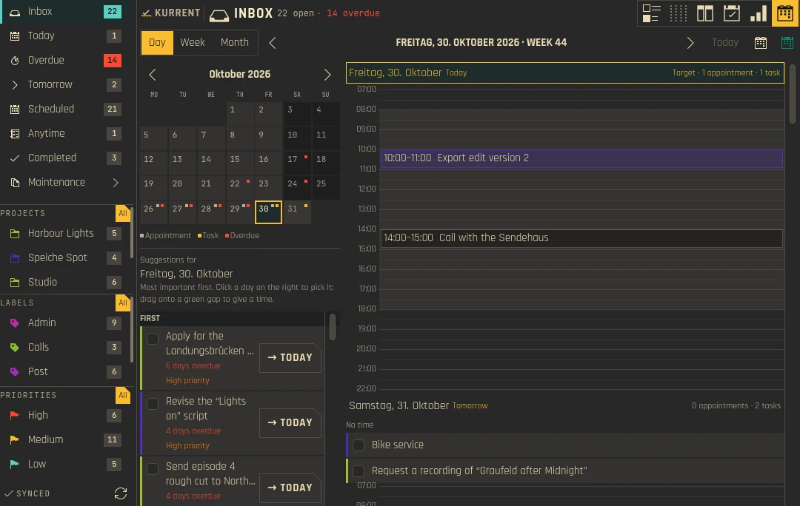
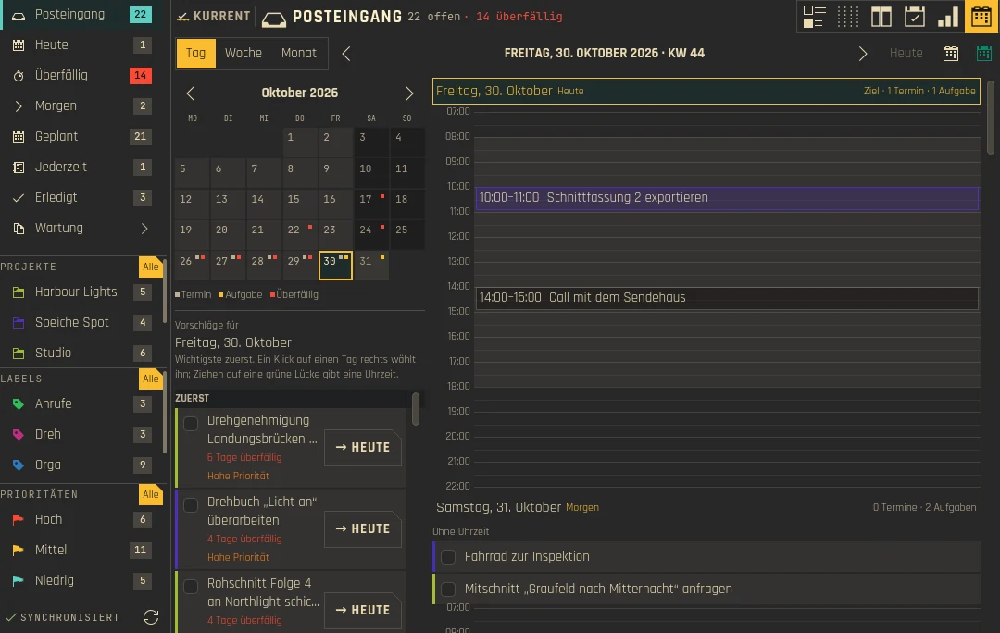
Agenda, dayAgenda, Tag 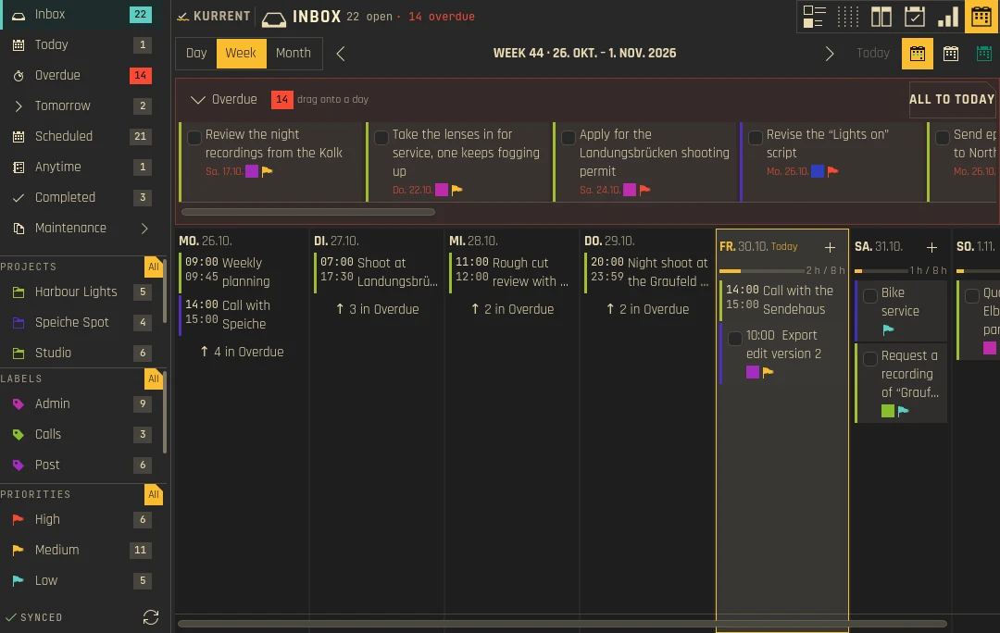
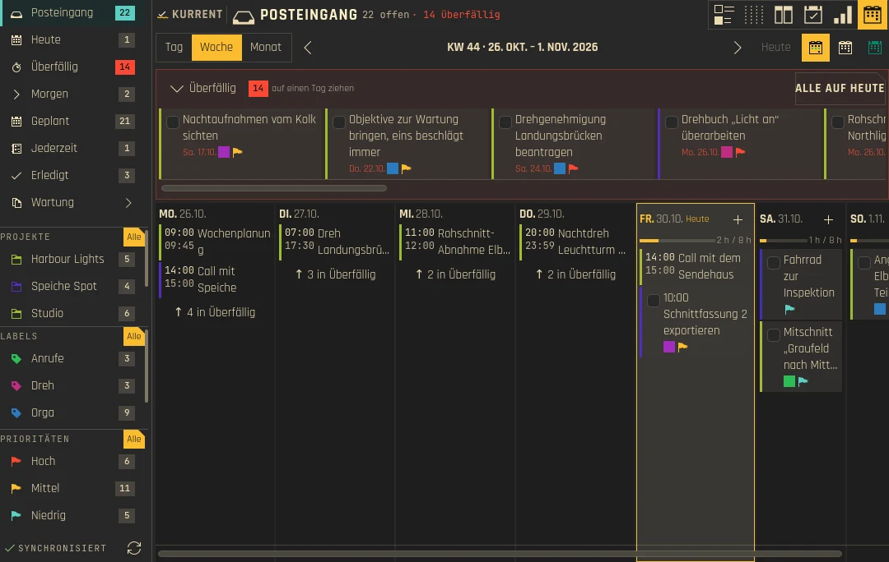
Agenda, weekAgenda, Woche 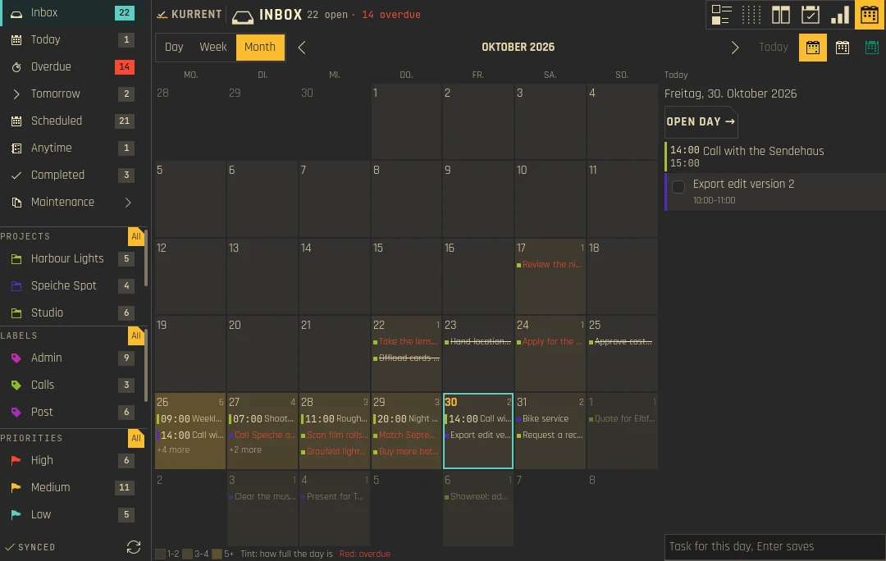
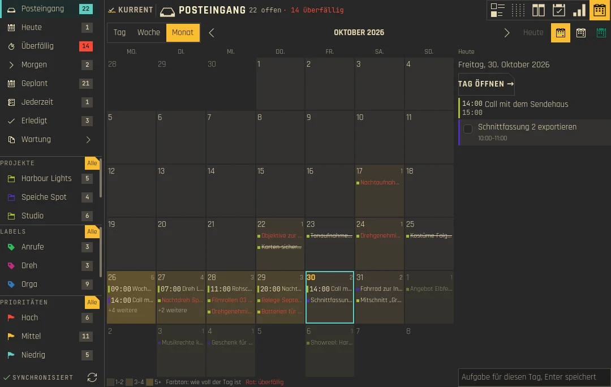
Agenda, monthAgenda, Monat -
0.4.0
Four new ways to look at your tasks: Swimlanes, a Project plan, a Heatmap and Calendar with tasks. Smart Views finally show their results and counts, and edits that clash with a sync now ask you which version to keep.Vier neue Ansichten auf die Aufgaben: Swimlanes, ein Projektplan, eine Heatmap und Kalender mit Aufgaben. Intelligente Ansichten zeigen endlich ihre Treffer und Zähler, und Änderungen, die mit einer Synchronisation kollidieren, fragen jetzt, welche Fassung bleiben soll.
NewNeu
- Swimlanes: tasks in a lane × time matrix; rows by project, label, priority or parent task, columns by day, week or month.Swimlanes: Aufgaben in einer Matrix aus Bahnen × Zeit; Zeilen nach Projekt, Label, Priorität oder übergeordneter Aufgabe, Spalten nach Tag, Woche oder Monat.
- Project plan: projects × time, with a planning horizon (0–52 periods), one column for overdue tasks, an optional column for undated tasks and optional completed tasks.Projektplan: Projekte × Zeit, mit Planungshorizont (0–52 Zeiträume), einer Spalte für Überfälliges, wahlweise einer Spalte für Aufgaben ohne Datum und erledigten Aufgaben.
- Heatmap: one cell per day, counting tasks due or tasks completed.Heatmap: eine Zelle je Tag, gezählt nach fälligen oder erledigten Aufgaben.
- Calendar with tasks: the day's events as chips next to its tasks, in a day or week mode.Kalender mit Aufgaben: die Termine des Tages als Chips neben seinen Aufgaben, als Tag oder Woche.
- Smart Views have their own folder in the sidebar, with a count badge, sorted by name.Intelligente Ansichten haben einen eigenen Ordner in der Seitenleiste, mit Zähler und nach Namen sortiert.
- Merge conflict dialog: when a task was changed in Kurrent and elsewhere at the same time, Kurrent goes through the differing fields one at a time and lets you pick the Kurrent or the Akonadi value.Dialog für Konflikte: Wurde eine Aufgabe zugleich in Kurrent und anderswo geändert, geht Kurrent die abweichenden Felder einzeln durch und lässt den Wert aus Kurrent oder aus Akonadi wählen.
- Settings › Views: options for Swimlanes (row and column axis) and the Project plan (time grouping, horizon, undated and completed tasks).Einstellungen › Ansichten: Optionen für Swimlanes (Zeilen- und Spaltenachse) und den Projektplan (Zeiteinteilung, Horizont, Aufgaben ohne Datum und erledigte).
- Task rows show their project when no project filter is active.Aufgabenzeilen zeigen ihr Projekt, solange kein Projektfilter aktiv ist.
ImprovedVerbessert
- The Smart View editor offers drop-downs for project, label, status, due date and priority instead of free-text fields.Der Editor für intelligente Ansichten bietet Auswahllisten für Projekt, Label, Status, Fälligkeit und Priorität statt Freitextfeldern.
- Entering a date without a time ticks "All day" automatically.Ein Datum ohne Uhrzeit setzt „Ganztägig“ von selbst.
- Clicking the Quick Add button with an empty field opens the full editor.Ein Klick auf den Schnelleingabe-Knopf bei leerem Feld öffnet den vollen Editor.
- Calendar view: a steady toolbar, an icon-only Today button and an animated Day/Week switch.Kalenderansicht: eine ruhige Werkzeugleiste, ein Heute-Knopf nur mit Symbol und ein animierter Tag/Woche-Schalter.
- Smoother animations when the list changes; the sidebar highlight slides instead of dimming.Flüssigere Animationen, wenn sich die Liste ändert; die Markierung in der Seitenleiste gleitet, statt abzudunkeln.
FixedBehoben
- Smart Views showed no tasks when they had no project rule, and their sidebar counts only appeared after a click.Intelligente Ansichten ohne Projektregel zeigten keine Aufgaben, und ihre Zähler erschienen erst nach einem Klick.
- A stale sync echo could overwrite a task you had just edited; Kurrent now ignores it and refetches before saving.Ein veraltetes Echo der Synchronisation konnte eine gerade bearbeitete Aufgabe überschreiben; Kurrent ignoriert es jetzt und lädt vor dem Speichern neu.
- The Views settings dialog did not fill its space.Der Einstellungsdialog für Ansichten füllte seinen Platz nicht aus.
All changes since 0.3.1 →Alle Änderungen seit 0.3.1 →NoteHinweis
- The merge conflict dialog, multi-select bulk actions, KRunner, the global shortcuts and the offline/syncing banner are covered by tests but were not yet checked by hand in a live session.Konfliktdialog, Mehrfachauswahl mit Sammelaktionen, KRunner, die globalen Kürzel und das Offline-/Synchronisierungsbanner sind durch Tests abgedeckt, aber noch nicht von Hand in einer echten Sitzung geprüft.
-
0.3.1
A translation release: every string of the widget is now translated.Eine Übersetzungsversion: Jeder Text im Widget ist jetzt übersetzt.
All changes since 0.3 →Alle Änderungen seit 0.3 →FixedBehoben
- All 304 interface strings are translated into German, Spanish, French, Japanese and Simplified Chinese; before, about 158 of them fell back to English.Alle 304 Texte der Oberfläche sind ins Deutsche, Spanische, Französische, Japanische und vereinfachte Chinesisch übersetzt; vorher fielen etwa 158 davon auf Englisch zurück.
Older releasesÄltere Versionen
-
0.3
Sorting you can shape and keep, a faster panel start, and a long list of fixes from daily use. The installer now checks your system before it touches anything.Sortierung, die sich formen und behalten lässt, ein schnellerer Start im Panel und eine lange Liste von Korrekturen aus dem Alltag. Das Installationsskript prüft jetzt das System, bevor es etwas anfasst.
NewNeu
- Multi-level sorting (default Priority › Due › A–Z) that is kept globally or per view; new sort keys: due latest first, start date, reminder or recurring first/last, progress.Mehrstufige Sortierung (Standard Priorität › Fälligkeit › A–Z), global oder je Ansicht gespeichert; neue Sortierschlüssel: späteste Fälligkeit zuerst, Startdatum, Erinnerung oder Wiederholung zuerst/zuletzt, Fortschritt.
- Pick any task of the same project as the parent in the full editor.Im vollen Editor lässt sich jede Aufgabe desselben Projekts als übergeordnete wählen.
- Reminders can stay quiet during ongoing calendar events, for the calendars you choose.Erinnerungen können während laufender Kalendertermine schweigen, für die gewählten Kalender.
- More panel badge modes (tomorrow, high priority), a dot instead of a number, the overdue badge colour, and a configurable panel tooltip.Mehr Modi für das Panel-Abzeichen (morgen, hohe Priorität), ein Punkt statt einer Zahl, die Farbe für Überfälliges und ein einstellbarer Panel-Tooltip.
- A warning with a reinstall command when the widget and the installed backend have different versions.Eine Warnung mit Befehl zur Neuinstallation, wenn Widget und installiertes Backend verschiedene Versionen haben.
ImprovedVerbessert
- Search and sidebar filters keep the whole open task tree; completed tasks only appear in Completed.Suche und Filter der Seitenleiste behalten den ganzen offenen Aufgabenbaum; erledigte Aufgaben erscheinen nur unter Erledigt.
- The panel icon and flyout appear at once and show a loading indicator while Akonadi connects; the badge no longer flashes empty.Panel-Symbol und Ausklappfenster erscheinen sofort und zeigen eine Ladeanzeige, solange Akonadi verbindet; das Abzeichen blinkt nicht mehr leer.
- Today's "Still open" shows every overdue task, the same set as the Overdue view.„Noch offen“ unter Heute zeigt alle überfälligen Aufgaben, dieselben wie die Ansicht Überfällig.
- Due date and time sit right-aligned in the task row; Quick Add wraps long text (Enter adds, Shift+Enter starts a new line).Fälligkeit und Uhrzeit stehen rechtsbündig in der Aufgabenzeile; die Schnelleingabe bricht lange Texte um (Enter fügt hinzu, Umschalt+Enter beginnt eine neue Zeile).
- Scrolling in the task list and the sort menu works like in other Kirigami apps, with overshoot on touchpads; the scroll bar matches the visible rows when subtasks are collapsed.Scrollen in der Aufgabenliste und im Sortiermenü verhält sich wie in anderen Kirigami-Apps, mit Nachfedern auf dem Touchpad; die Bildlaufleiste passt zu den sichtbaren Zeilen, wenn Unteraufgaben eingeklappt sind.
- Sidebar sections share their height better and can be reordered across several positions by dragging.Die Abschnitte der Seitenleiste teilen sich die Höhe besser und lassen sich per Ziehen über mehrere Positionen umsortieren.
FixedBehoben
- Due dates were missing in the task row and the editor (#2).Fälligkeiten fehlten in der Aufgabenzeile und im Editor (#2).
- The sort menu stuck on "None" for the second and third level.Das Sortiermenü blieb für die zweite und dritte Stufe auf „Keine“ hängen.
- The inline editor stayed open after changing the view, filter, search or sort.Der Inline-Editor blieb nach einem Wechsel von Ansicht, Filter, Suche oder Sortierung offen.
install-linux.shasked for a wrong Kirigami package on Debian/Ubuntu (#1), could leave root-owned files in~/.local, and missed Akonadi runtime packages on Debian/Ubuntu and Fedora.install-linux.shverlangte unter Debian/Ubuntu ein falsches Kirigami-Paket (#1), konnte Dateien in~/.localroot gehörend hinterlassen und vergaß Akonadi-Laufzeitpakete unter Debian/Ubuntu und Fedora.
All changes since 0.2.2 →Alle Änderungen seit 0.2.2 →NoteHinweis
install-linux.shnow stops on systems without Plasma 6 / Qt 6 / KF6, asks before continuing on unknown distributions and explains the options on immutable systems (rpm-ostree, transactional-update, Toolbx/Distrobox).install-linux.shbricht jetzt auf Systemen ohne Plasma 6 / Qt 6 / KF6 ab, fragt bei unbekannten Distributionen nach und erklärt auf unveränderlichen Systemen die Wege (rpm-ostree, transactional-update, Toolbx/Distrobox).
-
0.2.2
An installer fix: updating no longer removes the widget.Eine Korrektur am Installationsskript: Ein Update entfernt das Widget nicht mehr.
All changes since 0.2.1 →Alle Änderungen seit 0.2.1 →FixedBehoben
- Updating with
install-linux.shdeleted the widget; updates now copy the files in place.Ein Update mitinstall-linux.shlöschte das Widget; Updates kopieren die Dateien jetzt an Ort und Stelle. - Installing with
sudo bashleft files under~/.localowned by root.Eine Installation mitsudo bashhinterließ Dateien unter~/.local, die root gehörten.
- Updating with
-
0.2.1
A bug-fix release for Quick Add.Eine Fehlerkorrektur für die Schnelleingabe.
All changes since 0.2.0 →Alle Änderungen seit 0.2.0 →FixedBehoben
- The highlighting in Quick Add shifted left while typing.Die Hervorhebung in der Schnelleingabe verrutschte beim Tippen nach links.
- Selecting text in Quick Add (Ctrl+A) showed the text twice.Markierter Text in der Schnelleingabe (Strg+A) erschien doppelt.
-
0.2.0
A planner-style task flow, a full settings dialog, reminders and a faster panel start.Ein Aufgabenfluss wie in einem Planer, ein vollständiger Einstellungsdialog, Erinnerungen und ein schnellerer Start im Panel.
NewNeu
- Today no longer mixes in overdue tasks; a "Still open" catch-up and an Overdue view in the sidebar take them.Heute mischt keine überfälligen Aufgaben mehr hinein; dafür gibt es „Noch offen“ und eine Ansicht Überfällig in der Seitenleiste.
- Reschedule from the task row (15 min, 1 h, 4 h, tomorrow, next week) and one-step undo for complete, reschedule, move and delete.Verschieben direkt aus der Aufgabenzeile (15 Min., 1 Std., 4 Std., morgen, nächste Woche) und Rückgängig in einem Schritt für Erledigen, Verschieben, Umhängen und Löschen.
- Morning, afternoon and evening groups, and a list section field in the editor.Gruppen für Morgen, Nachmittag und Abend sowie ein Feld für den Listenabschnitt im Editor.
- Quick Add understands dates, priorities and labels (
tomorrow 18:00 !high #tag); a Join button opens meeting links.Die Schnelleingabe versteht Datum, Priorität und Labels (tomorrow 18:00 !high #tag); ein Beitreten-Knopf öffnet Meeting-Links. - Reminders (VALARM) in the editor and as Plasma notifications with snooze, with optional quiet hours.Erinnerungen (VALARM) im Editor und als Plasma-Benachrichtigungen mit Schlummern, wahlweise mit Ruhezeiten.
- A settings dialog with pages for appearance, sidebar, tasks, editor, panel, notifications, projects and labels, each with its own reset; the sidebar order is set by dragging.Ein Einstellungsdialog mit Seiten für Darstellung, Seitenleiste, Aufgaben, Editor, Panel, Benachrichtigungen, Projekte und Labels, jede mit eigenem Zurücksetzen; die Reihenfolge der Seitenleiste wird per Ziehen festgelegt.
- Panel badge (open, today or overdue), a default due date, colours per project and label, renaming labels, collapsible subtask trees.Panel-Abzeichen (offen, heute oder überfällig), ein Standard-Fälligkeitsdatum, Farben je Projekt und Label, Labels umbenennen, einklappbare Unteraufgaben.
- Keyboard control in the widget, plus the global shortcuts Meta+Shift+K and Meta+Shift+N.Tastatursteuerung im Widget und die globalen Kürzel Meta+Umschalt+K und Meta+Umschalt+N.
- Empty states when Akonadi is offline, no calendar exists or a view is empty.Hinweise, wenn Akonadi offline ist, kein Kalender existiert oder eine Ansicht leer ist.
- GitHub releases carry
kurrent-linux-x86_64.tar.gzandinstall-linux.sh; the one-line installer puts the plugin into~/.local(--from-sourcebuilds it when the binary does not match the distribution).GitHub-Releases enthaltenkurrent-linux-x86_64.tar.gzundinstall-linux.sh; der Einzeiler installiert das Plugin nach~/.local(--from-sourcebaut es, wenn die Binärdatei nicht zur Distribution passt).
All changes since 0.1.0 →Alle Änderungen seit 0.1.0 →ImprovedVerbessert
- Completing a recurring task moves the series on and keeps its recurrence rule.Das Erledigen einer wiederkehrenden Aufgabe rückt die Serie weiter und behält ihre Wiederholungsregel.
- The panel starts without waiting for Akonadi and fills the badge and list from the cache at once.Das Panel startet, ohne auf Akonadi zu warten, und füllt Abzeichen und Liste sofort aus dem Zwischenspeicher.
-
0.1.0
The first public release of Kurrent, a task manager for KDE Plasma 6 on your Akonadi tasks.Die erste öffentliche Version von Kurrent, einer Aufgabenverwaltung für KDE Plasma 6 auf deinen Akonadi-Aufgaben.
NewNeu
- Inbox, Today, Tomorrow, Scheduled, Anytime, Recurring, Unlabeled and Completed views.Ansichten Eingang, Heute, Morgen, Geplant, Jederzeit, Wiederkehrend, Ohne Label und Erledigt.
- Projects, labels and priorities from Akonadi, for example a Nextcloud CalDAV account.Projekte, Labels und Prioritäten aus Akonadi, etwa aus einem Nextcloud-CalDAV-Konto.
- Create, edit, complete and delete tasks, with subtasks and drag and drop.Aufgaben anlegen, bearbeiten, erledigen und löschen, mit Unteraufgaben und Ziehen und Ablegen.
- A full editor inside the widget and a compact inline editor.Ein voller Editor im Widget und ein kompakter Inline-Editor.
- The desktop widget and the panel flyout share their settings.Desktop-Widget und Panel-Ausklappfenster teilen sich ihre Einstellungen.
- Optional wallpaper blur behind the widget.Wahlweise unscharfer Hintergrundbild-Effekt hinter dem Widget.
- Translations into German, Spanish, French, Japanese and Simplified Chinese.Übersetzungen ins Deutsche, Spanische, Französische, Japanische und vereinfachte Chinesisch.